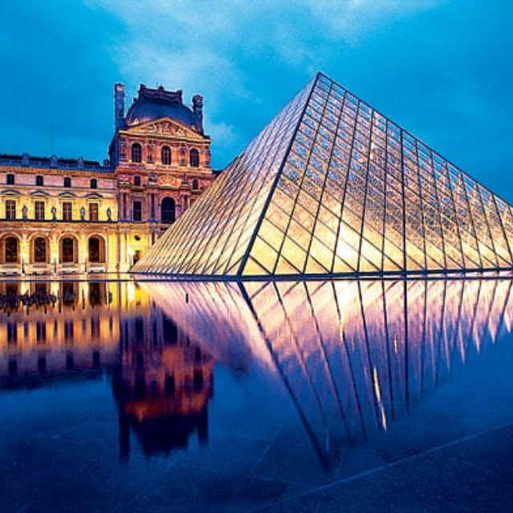
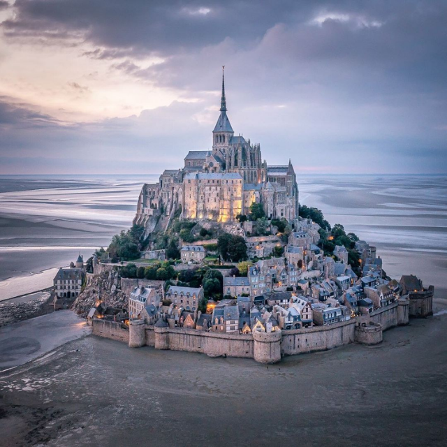

Eiffel Tower (Paris)
France’s most iconic landmark, offering breathtaking views of Paris from its viewing platforms.
Nearby Hotels:
-
Pullman Paris Tour Eiffel – 0.3 km
(4.5)
💲280 / night
-
Shangri-La Hotel Paris – 0.6 km
(4.8)
💲450 / night
-
Hotel La Comtesse – 0.8 km
(4.4)
💲220 / night

Louvre Museum (Paris)
The world’s largest art museum, home to the Mona Lisa and thousands of priceless works of art.
Nearby Hotels:
-
Hotel du Louvre – 0.1 km
(4.7)
💲350 / night
-
Grand Hotel du Palais Royal – 0.4 km
(4.9)
💲420 / night
-
Novotel Paris Les Halles – 0.6 km
(4.3)
💲200 / night

Mont Saint-Michel
A UNESCO World Heritage site, a medieval abbey perched on an island, surrounded by tidal waters.
Nearby Hotels:
-
Hotel Gabriel Mont Saint-Michel – 0.5 km
(4.4)
💲140 / night
-
Le Relais Saint-Michel – 1.0 km
(4.7)
💲250 / night
-
Mercure Mont Saint-Michel – 1.2 km
(3.9)
💲120 / night